Stage four: the company I work for started buying licences, and GitHub Copilot arrived. Used inside VS Code, and — this matters for everything below — generating code, not driving Office.
I pointed it at the recurring work I most wanted off my plate. Analyses over datasets. Documents built from those analyses. And slide decks.
Two of those went well. It turned out to be genuinely strong at analysis, and better still at designing small tools. The third went badly in a way I couldn't explain for a long time.
this PowerPoint.
I asked it to write Python that generated the deck. And I did everything this channel has spent forty units telling you to do. Detailed notes on exactly what belonged on each slide. Explicit requirements. Worked examples of the output I wanted. Maximum specificity, every time.
Every version came back generic. Not broken — it ran, it produced a valid file, it had my content in it. It just wasn't remotely what I'd described, and no amount of additional detail moved it closer.
That bothered me for a while, because it contradicts the premise of almost everything I've published. Better prompt, better output. Here the prompt was as good as I could make it and the ceiling didn't move an inch.
It Never Saw the Slides
When it writes python-pptx code, it is placing a text box at four inches from the left and two inches down, at 28pt, and it never gets to look at the result. There's no render, no preview, nothing fed back. It's describing a picture it will never be shown.
That's why the examples didn't help. An example only teaches when the model can compare its output against it — and it couldn't see its own output to compare. I was handing a reference photo to someone working with their eyes closed.
Which seems to explain the split. The analysis worked because an analysis is text it can read back and check. The tools worked because code runs, throws errors, and produces output you can inspect. A rendered deck is a closed door.
It Had to Be the Layout Engine
Except blindness isn't actually the whole story, and this is the part that nearly fooled me. The same tool writes genuinely well-formatted HTML pages and clean analysis briefs. It can't see those either.
So the variable isn't really whether it can see the output. It's who computes the layout.
Write HTML and you describe structure — a heading, a paragraph, a table — and the browser works out spacing, wrapping and flow. Even plain HTML with no styling comes out readable, because something downstream is making sensible decisions on your behalf.
Write python-pptx and there is no downstream. Every element is an absolute coordinate you supply. The model isn't describing a deck to a renderer — it is the renderer, doing layout maths in its head, blind, with nothing to catch a bad guess.
That's the real test: does this format have a layout engine, or does the model have to be one? Where a renderer exists, blindness is survivable. Where it doesn't, blindness is the whole ballgame — and no amount of detail in your prompt substitutes for a layout engine.
Which leads to the single most useful thing in this post, and it took me embarrassingly long to see it: it isn't bad at presentations. It's bad at .pptx. Ask the same tool for an HTML deck and you get something you'd actually put in front of people. Ask for slide-shaped markdown and convert it — same result. The capability was never missing. I'd picked the one output format that made it do the hardest possible version of the job.
Once you see the distinction you notice where it bites: absolute-positioned PDF reports, canvas drawing, hand-rolled chart coordinates. Anywhere the code sets positions rather than describing structure. The question stops being how do I prompt this better and becomes can I move this to a format that does the layout for me?
Every Fix, Copy-Paste Ready
Forty units of this channel argue that better prompting produces better output. I still believe that — but it has a boundary, and this is the boundary. Prompt quality determines results only where the model can check its work. Where it can't, you're not fixing the prompt, you're building the missing loop. Knowing which situation you're in is worth more than any single technique on this list.
Five Eras, None of Them Mine
Four down. The open era, the in-house build, the lockdown, and now the procurement era — where the tooling finally got good, and I learned where "good" still stops.
One stage left, and it's the strangest one: the tooling worked well enough that usage climbed, and that turned out to be the problem. Then the stack changed again and I had to learn a new editor from scratch.
All Twelve, Full Size
The full set at full size. Save the ones you'll actually use — or screenshot the lot.
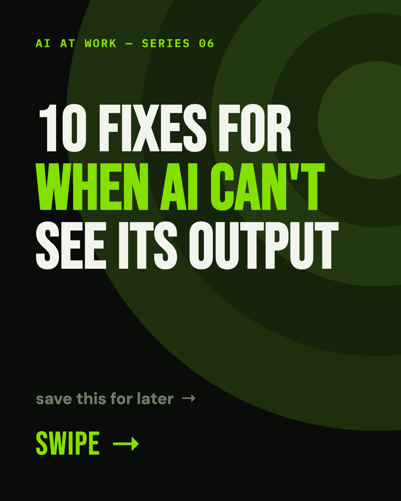
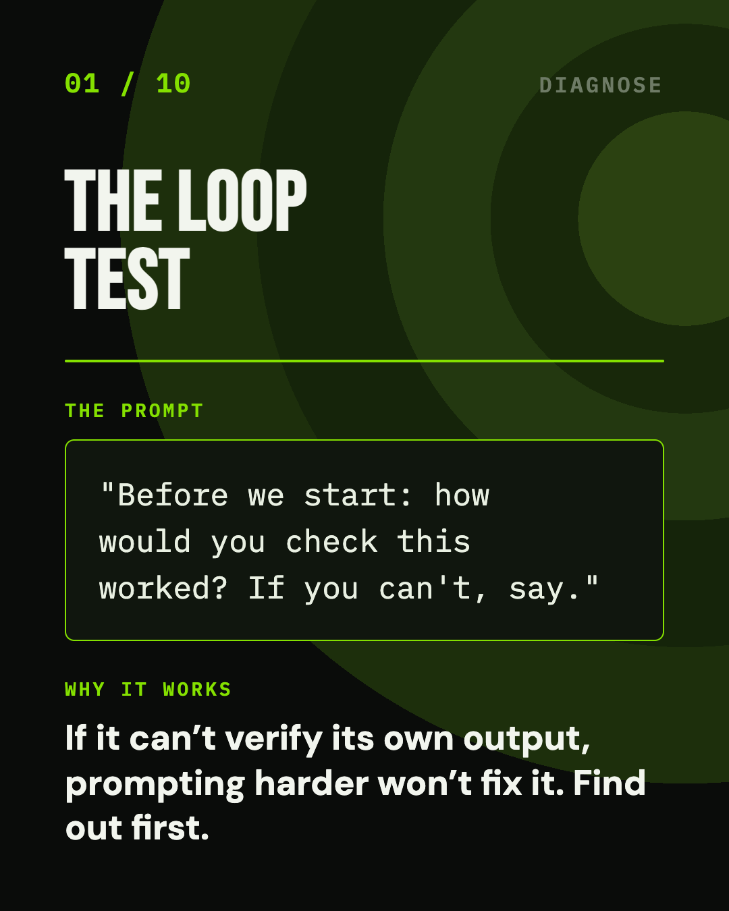
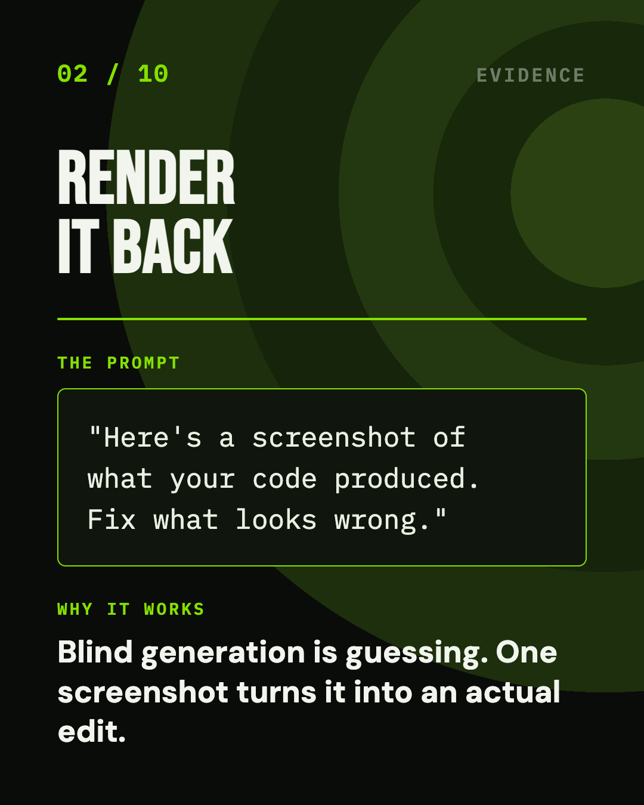
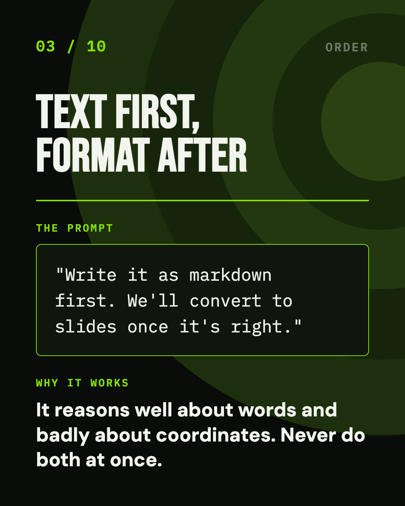
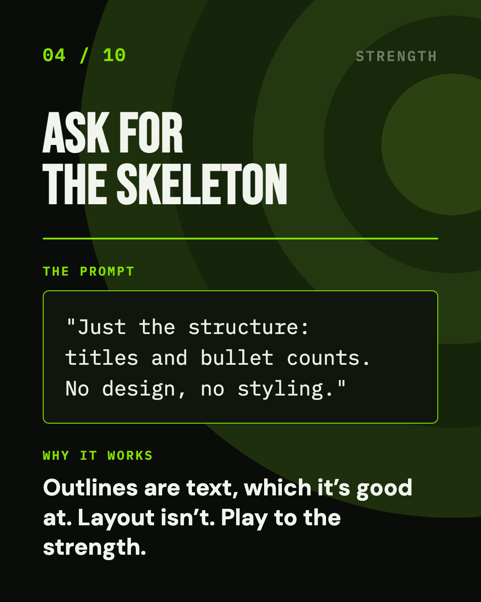
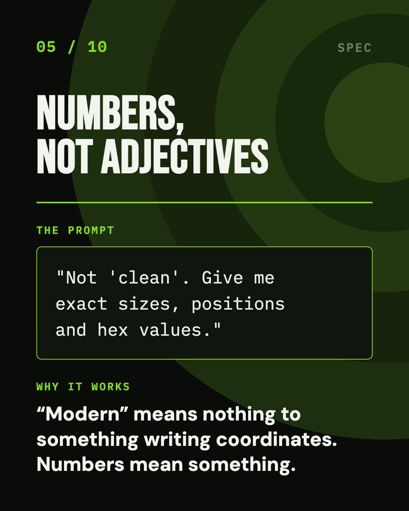
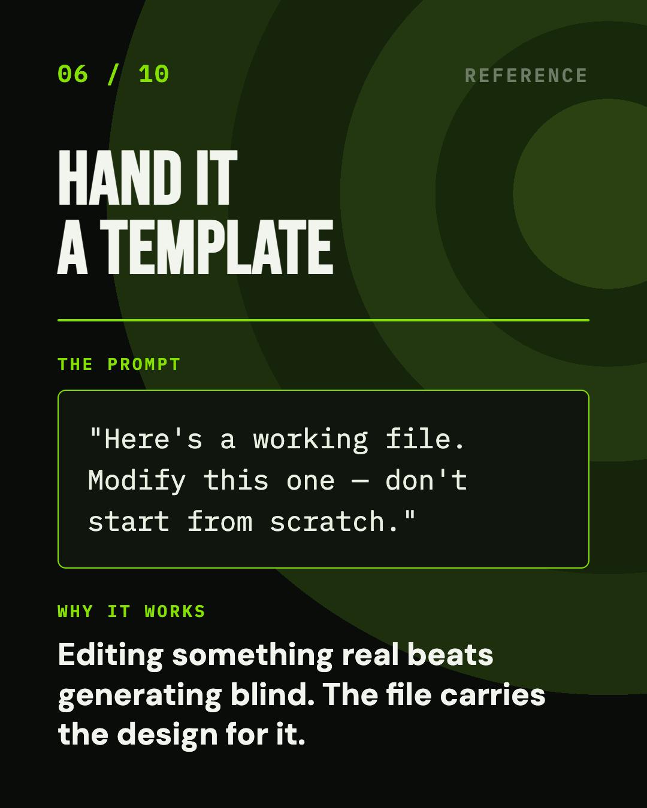
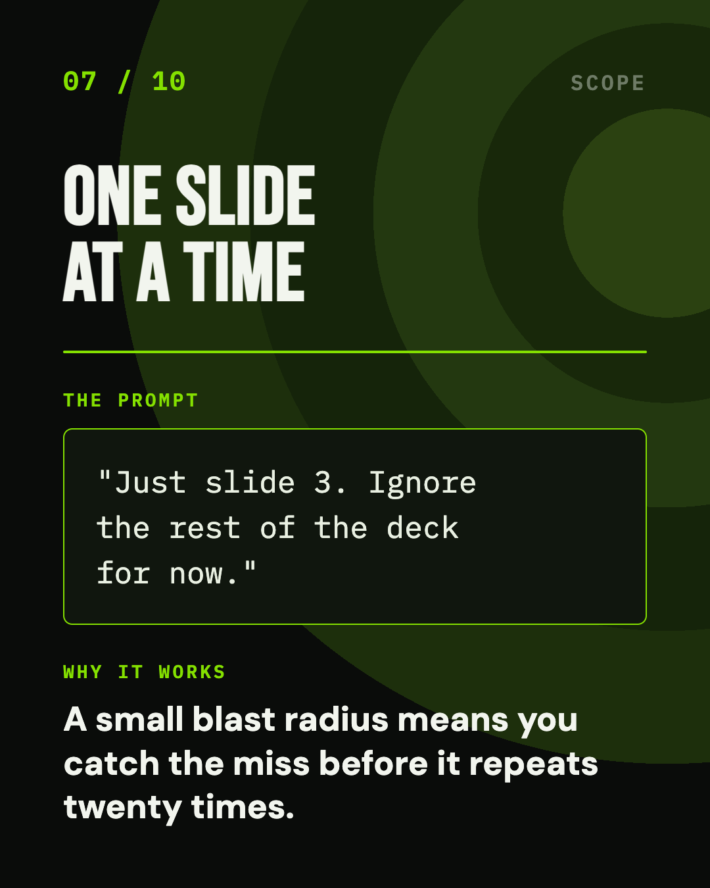
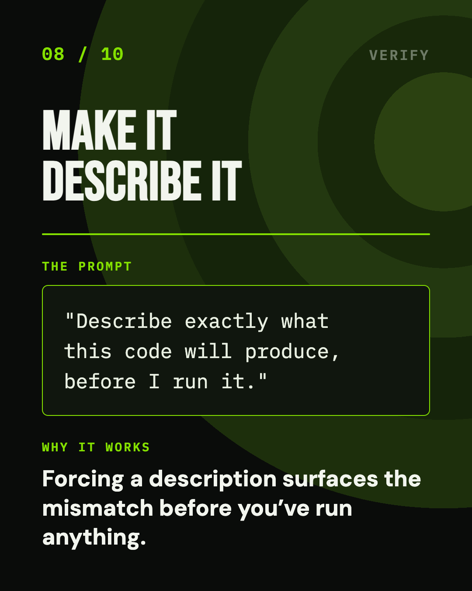
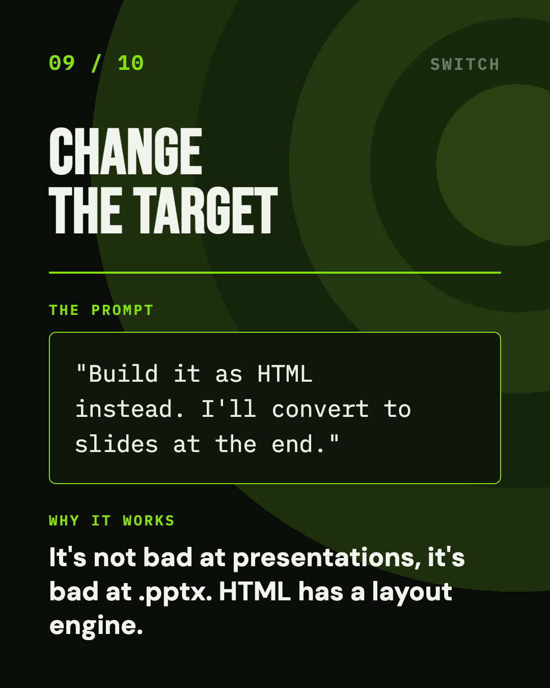
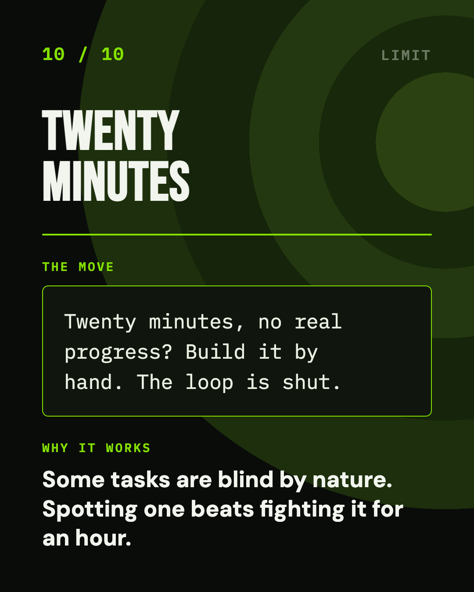
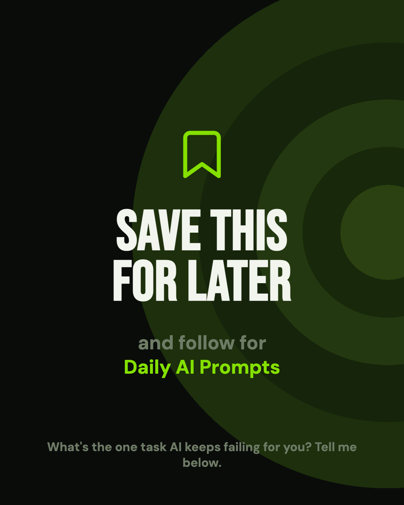